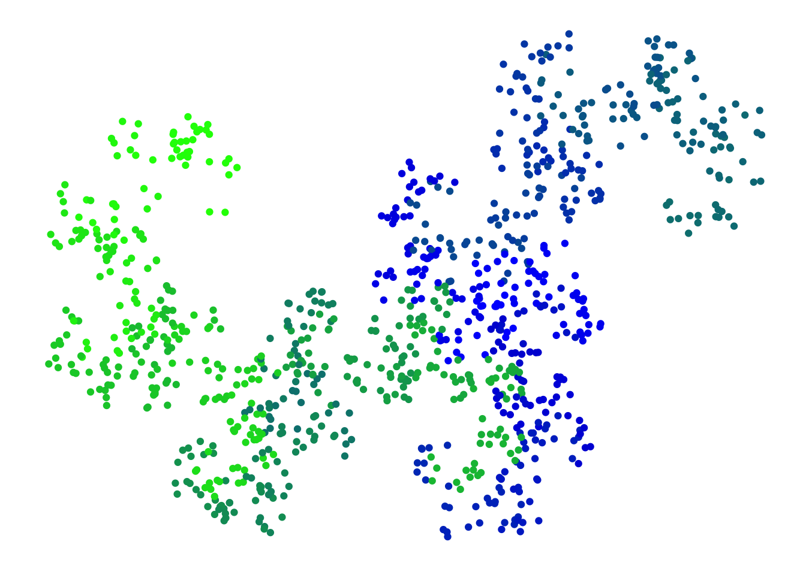
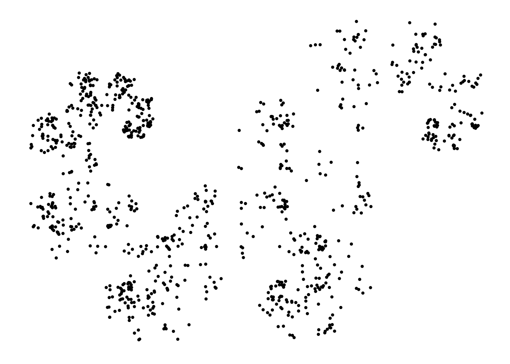
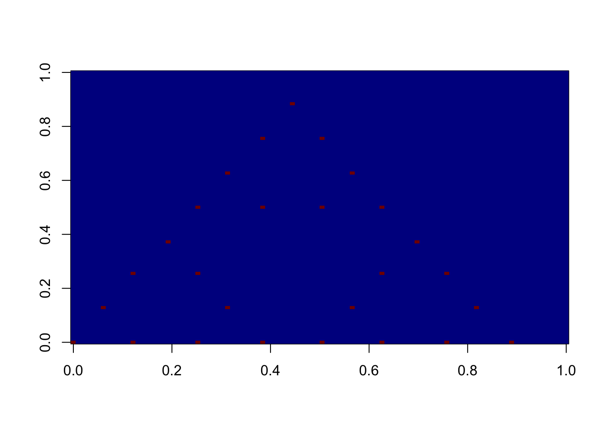
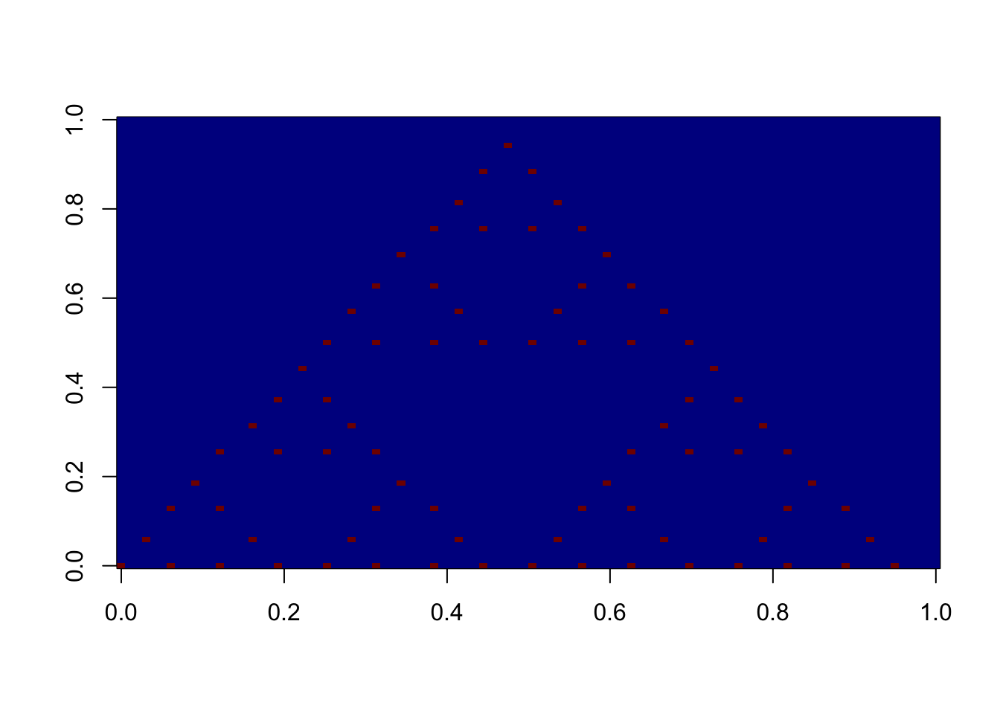
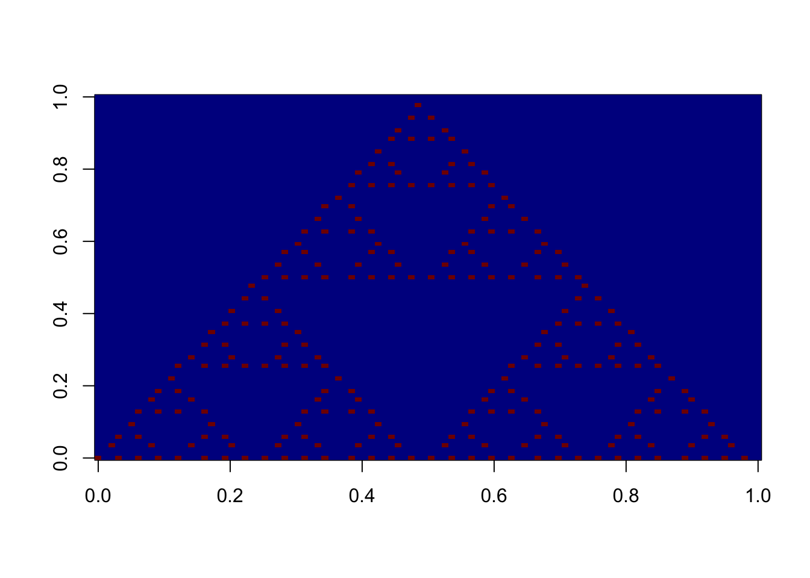
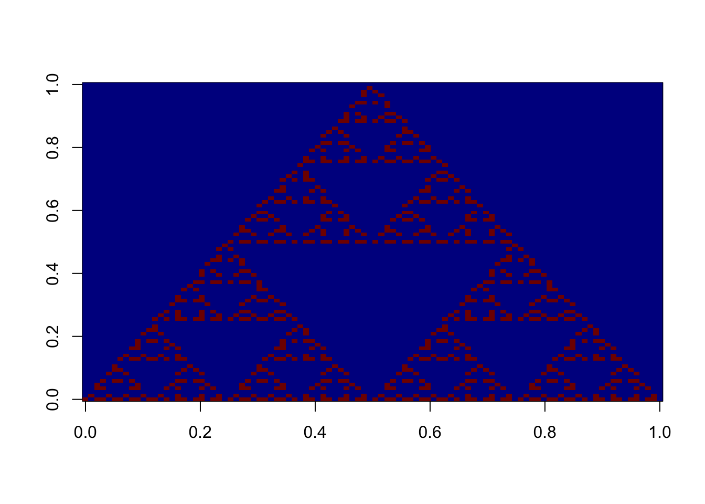
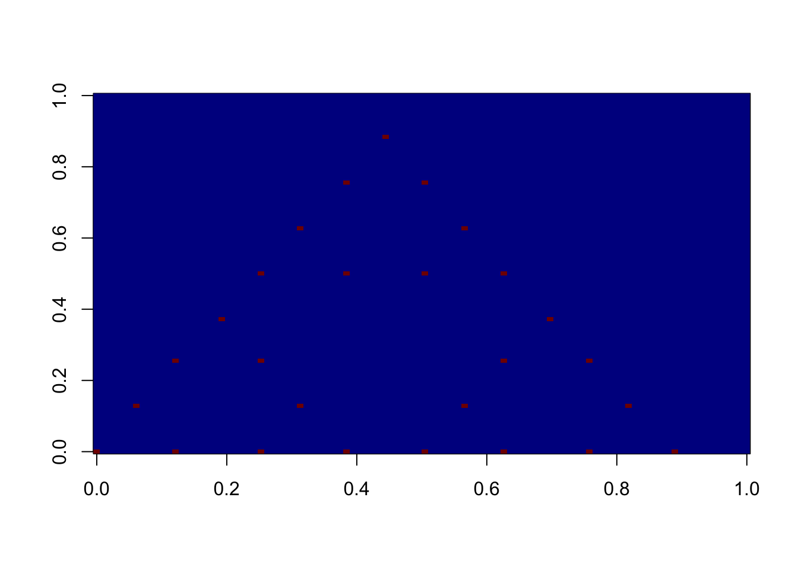
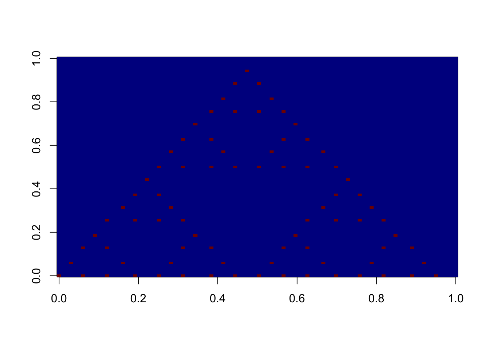
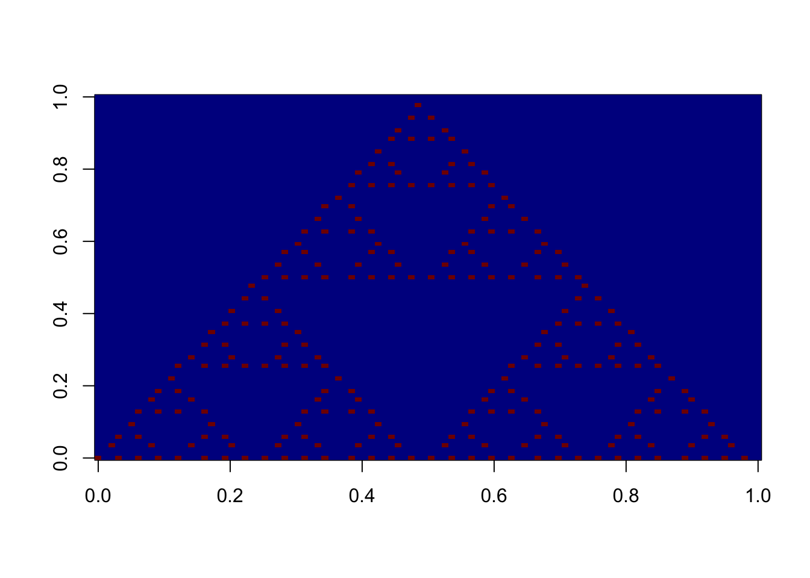
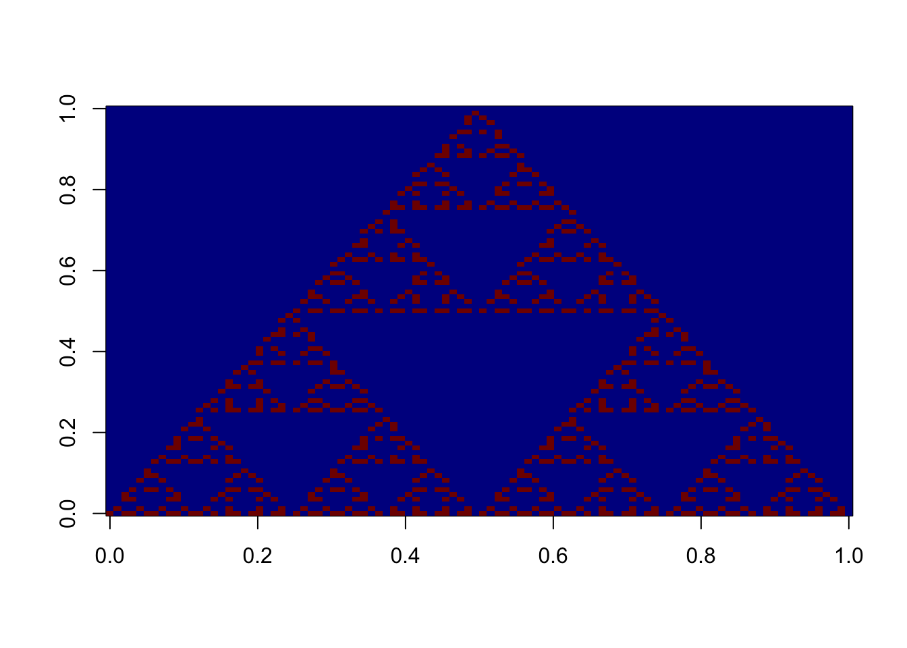

IFSrainbow Package Vignette
This vignette describes in a non-technical way how to create, modify and plot fractals using IFSrainbow package. A nice interactive presentation of what this package is capable of can be found here.
A bit of theory
Iterated Functions System Fractal (or IFS fractal) is defined by a finite family of space transformations \(\mathcal{F}=\{f_1,f_2,\ldots,f_k\}\) (typically contractions, i.e. “shrinking” functions). It is the invariant set of so called Hutchinson’s operator, which is the union of all possible finite compositions of functions in \(\mathcal{F}\). Examples of fractals that can be obtained in such way include famous Sierpiński’s Trangle, Koch’s Snowflake or Heighway’s Dragon. See this Wikipedia page for more details.
Fractal creation
As the IFS fractal is defined by the set of functions, IFSpackage introduces an S3 class ifs which is no other than a list of functions. For example, in order to create Heighway’s Dragon defined by the following two functions
f1 <- function(p){
return( c(
p[1]/2 + p[2]/2 - 1,
-p[1]/2 + p[2]/2
) )
}
f2 <- function(p){
return( c(
-p[1]/2 + p[2]/2,
-(p[1]/2 + p[2]/2 - 1)
) )
}one needs to use createIFS function. It accepts two “types” of arguments – firstly it can be just a sequence of functions or else a list of functions, so any of the two below would work
Of course, this can be performed for any number of functions.
Plotting
Objects of class ifs can be plotted just by applying plot functions. Its default version use so called chaos game method of drawing the fractal, in which random compositions of given functions are applied to a random set of points to obtain an approximation of the “true” fractal.
The functions assumes three mandatory arguments:
-
ifs, which is the fractal in question -
n, which is the number of points in the plot -
d, which is the length of random compositions applied
There are also optional arguments:
-
probs, which is the sequences of probabilities of choosing respective functions
Moreover, as we use the benefits of the ggplot2 package, some additional graphical parameters can be passed to the ggplot function inside. Therefore the following can be used to obtain a nice approximation of the Heighway Dragon
plot( my_heighway1, 1000, 20 )
If we do not like colours (but why not?), prefer smaller points and wish that one of the functions is used more often than the other, we could run
plot( my_heighway1, 1000, 20,
probs=c(.7,.3), color="black", size=.8 )
Creating gifs
Gif animations can be created by function createIFSanimation. This function takes 6 arguments.
-
startPoint, the point from which we start to create IFS -
depth, the number of gifs frames -
fractal, fractal, that will be drawn -
resolution, because successive gifs frames are represented as matrices, we have to assume a resolution that means accuracy when coloring the corresponding matrix fields -
filename, the name of the file being saved -
scale, because the size of the gif depends on the fractal, depth and resolution, so the scale enlarges the figure proportionally
Eight first frames of the Sierpinski triangle
fractal <- sierpinski
startPoint = c(0,0)
depth = 6
resolution = 2
scale = 1
for(l in 1:depth){
IFS <- generateIFSgif(startPoint,l,fractal)
f <- round(IFS,2)
xmin <- min(f[,1])
xmax <- max(f[,1])
ymin <- min(f[,2])
ymax <- max(f[,2])
diamy <- (ymax-ymin)*10^2+2
diamx <- (xmax-xmin)*10^2+2
}
DM <- array(0,c(diamx*scale,diamy*scale,depth))
for(l in 1:depth){
IFS <- generateIFSgif(startPoint,l,fractal)
f <- round(IFS,resolution)
f <- dplyr::distinct(f,x,y)
for(i in 1:nrow(f)){
x<-(round((f[i,1]-min(f[,1]))*10^resolution)+1)*scale
y<-(round((f[i,2]-min(f[,2]))*10^resolution)+1)*scale
DM[x,y,l]<-1
}
}
image <- (DM*120)+50
for(i in 1:depth){
image(image[,,i], col=tim.colors(256))
} 
